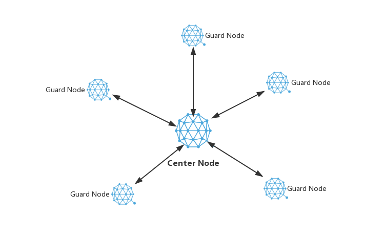
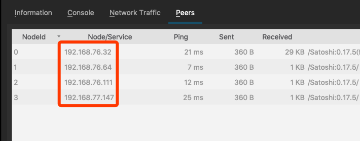

Deploy Qtum Star Network
Purpose
When staking, the node is required to be always online. There may be some safety risk if the node is public to the network. For example, the node may be compromised. Or when the node is under attack, it may not be able to stake without problem. We can deploy a star network like the following picture. Cetner node is reponsible for staking. It spreads the new block through guard nodes. Guard nodes are public to the network. All safety risk or attach would go to the guard nodes. The staking can be ensured even if ther's only one guard node left.
In short, the main purpose is to make a Qtum node which can communicate with the blockchain network and is in a closed netowrk in order to avoid possible attack and risk.

Configuration
1. Guard Nodes
The guard nodes don't need to be specified configured. The only requrement is they can be connected by the center node. You may need to open the port 3888 if there's a firewall.
2. Center Node
There's a option named connect in Qtum. Here's the description
-connect=<ip>
Connect only to the specified node; -noconnect disables automatic
connections (the rules for this peer are the same as for
-addnode). This option can be specified multiple times to connect
to multiple nodes.
We can specify some IP address so the center node connects to the specified nodes only. This can be done by adding connect option to Qtum's configurationfile. You can add multiple connect. One line is for one guard node. Please restart the center node after adding them and check if it connects to guard nodes.
connect=192.168.76.32
connect=192.168.76.64
connect=192.168.76.111
connect=192.168.77.147

In Linux system, you can run qtum-cli getpeerinfo to check the connection info.

For more detail of adding options, pelase check this doc: https://docs.qtum.site/zh/How-To-Add-Options/.